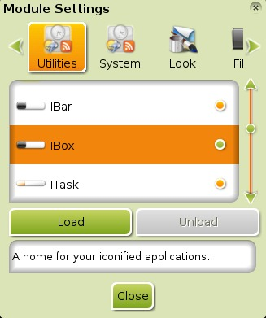

[click on any image to enlarge]
This page explains, in some detail, what Enlightenment (E17) Modules are, how they are related to Gadgets, how to load installed Modules, and how to install Modules from the Bodhi Linux repository.
What is a Module?
A Module is a small E17 program that can be used to extend the functionality of your desktop. They can be installed to the PC and loaded into RAM at runtime. By not loading all its Modules by default, E17 minimizes the amount of RAM being used at any given time. The more Modules you load, the more RAM will be occupied. On PCs with 256MB of RAM or less, it becomes a slight consideration. But due to the efficiency of the Enlightenment Foundation Libraries (EFL), each Module takes up very little additional memory. The applications(word processors, web browsers, etc.) you choose to run are the much more important aspect to consider with limited RAM. Many Modules, once loaded into RAM, provide access to Gadgets that can be placed on the desktop or on a Shelf.

{kind=link}
How to Load Modules
Go to Menu>Settings>Modules and the Module Settings dialogue, depicted on the right, appears.
Notice the tabs at the top. The Modules are categorized as Utilities, System, Look and so on. In the screenshot, the iBar module has an orange circle indicator adjacent to it. (the indicator changes based on Theme), meaning it is already loaded. There is a brief description of what the highlighted Module does at the bottom of the Modules Settings window. You have the option of unloading it to save the very little memory it uses. The next Module listed, iBox, is not loaded. If you click on the iBox line, the Load button will become active, as depicted. The scrollbar at the right lets you scroll down the list to see the other Modules you have installed and their status - either loaded into RAM or not loaded.
Modules and Gadgets
Many of the Modules provide Gadgets that can be added to your desktop or onto a Shelf. Some, like EFM Operation Info, can only be displayed on the desktop, while others like Systray can only be displayed on a Shelf. Several Modules exist whose only function is to provide a Gadget, such as the Clock module. In most cases, a Gadget will not be displayed just by loading its respective Module, because E17 lets you decide where to display the Gadgets, whether it be shelf or desktop. Please see the Shelves and Gadgets page for details on placing a Gadget in one or the other location.
Installed Modules
Please see the Module Reference page for a list of all Modules installed by default.
Downloading Modules
Many Modules, such as Forecasts,
are not included in the Bodhi Linux installation CD in
order to keep it within size limits, in accordance with the
Bodhi Linux philosophy. Modules that
are not installed by default can be found in the Bodhi Linux
repository. You can install them via Synaptic Package Manager at
Main Menu>Applications>Preferences or with the apt-get command-line tool:
sudo apt-get install -y <name-of-module>
Besides Forecasts, check out the following useful Enlightenment Modules that are not installed by default:
- cpu
- forecasts
- mem
- news
- net
- tclock
Search for "enlightenment module" in the Quick Search box of Synaptic to find any others.
For a complete list of available Modules see the Module Reference.
Removing a Module
Because of the nature of Modules, it is not necessary to delete/uninstall them. As long as they are not loaded, they will not be using any system resources (RAM & CPU for example). Plus, the disk space they occupy is negligible.
However, if you do find the urge to completely remove one (or more) Modules, simply uninstall it from the Synaptic Package Manager like any other other application, or run the following command in Terminology (or whichever subpar terminal emulator you decided to use instead):
sudo apt-get remove -y <name-of-module>